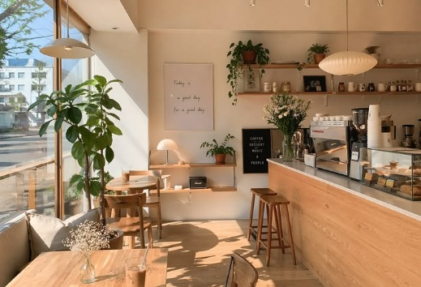

Café de especialidad
Cada taza tiene una historia
Café de especialidad con trazabilidad completa: conocé al productor, la finca y el proceso detrás de cada taza que servimos.
Conocé nuestros orígenes

Nuestra propuesta
Una cafetería chica y cercana
No competimos por volumen ni variedad: elegimos calidad y transparencia. Estética minimalista Japandi, espacio tranquilo para trabajar, leer o encontrarte con alguien.
Sobre RaízEncuentros mensuales
Catas guiadas
Una vez al mes presentamos un origen distinto de café, narrado por quien lo prepara.
Anotarme